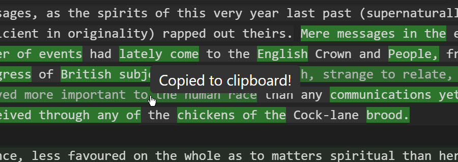

Project Information
Author: Ron Thomas
Email: ron@wolfden.pub
GitHub: https://github.com/wolfdenpublishing/differon
Table of Contents
Overview
Differon is a specialized file comparison tool designed specifically for comparing written text documents such as prose, articles, stories, and other natural language content. Unlike traditional diff tools that are optimized for source code, Differon uses natural language processing techniques to provide meaningful comparisons that respect the structure and flow of written text.
- Natural language-aware paragraph and sentence comparison
- Multi-tab interface supporting up to 20 documents per side
- Two-level diff analysis: paragraph and sentence
- Fuzzy matching for identifying similar content
- Click-to-sync navigation between matching sections
- Customizable highlighting colors
- Multiple diff algorithms optimized for different use cases
Getting Started
Interface Overview
The Differon interface consists of several key components:

The main window is divided into:
- Left Document Pane: Displays the first document for comparison
- Right Document Pane: Displays the second document for comparison
- Control Panel: Located at the top, contains comparison controls and settings
- Tab Bar: Above each document pane, allows multiple documents to be open
Loading Documents
There are several ways to load documents into Differon:
- Click the folder icon in either the left or right pane's toolbar
- Drag and drop files directly onto either document pane
- Paste from clipboard: Use Ctrl+V to paste text content as a new document
- Use keyboard shortcuts:
- Ctrl+O to open in the left pane
- Ctrl+Shift+O to open in the right pane
Document Types
Differon distinguishes between two types of documents, indicated by icons in the tab:
| Icon | Document Type | Description |
|---|---|---|
| File Document | A document loaded from a file on disk | |
| Pasted Document | A document created from clipboard content |
Comparing Documents
Differon provides two levels of comparison that can be used independently or together:
Paragraph-Level Differences
When paragraph-level diff is enabled, Differon identifies which paragraphs have been added, deleted, or modified between the two documents.

Visual indicators:
- Change bars: 3-pixel vertical bars appear next to modified paragraphs
- Background highlighting: Changed paragraphs receive a subtle background color
- Variable opacity: Fuzzy-matched paragraphs show with reduced opacity based on similarity
Sentence-Level Differences
Sentence-level diff provides fine-grained comparison within paragraphs, using natural language processing to identify sentence boundaries.
How it works:
- Select paragraphs by clicking on them (they'll show a selection highlight)
- Enable "Sentence Diff" in the control panel
- Click "Compare" to analyze differences
- Changed sentences appear with stronger highlighting
- For fuzzy-matched sentences, only the differing words are highlighted
Fuzzy Matching
Fuzzy matching allows Differon to identify content that has been modified but remains similar.

Each diff level has its own fuzziness control:
- Paragraph Fuzziness: Controls how similar paragraphs must be to be considered matches
- Sentence Fuzziness: Controls sentence similarity threshold
- Range: 0% (exact matches only) to 100% (very loose matching)
Diff Algorithms
Differon offers multiple algorithms for both paragraph and sentence comparison, each optimized for different scenarios:
Paragraph Algorithms
Thomas Algorithm
Best for: Sequential text with minimal reordering
Characteristics:
- Fast and efficient
- Preserves document order
- Good for version comparisons
With fuzzy matching: Identifies similar paragraphs even with minor edits
Patience Algorithm
Best for: Documents with structural changes
Characteristics:
- Better at handling moved content
- Identifies unique anchors first
- More accurate for reorganized text
With fuzzy matching: Finds relocated paragraphs with modifications
Sentence Algorithms
| Algorithm | Best Use Case | Fuzzy Matching Behavior |
|---|---|---|
| Thomas | Line-by-line edits within paragraphs | Shows word-level differences in similar sentences |
| Patience | Reordered sentences within paragraphs | Matches moved sentences with edits |
| Levenshtein | Heavy editing with insertions/deletions | Calculates edit distance for similarity |
| Character | Precise character-level comparison | Shows exact character changes |
Navigation Features
Click-to-Sync
Click-to-sync allows you to quickly navigate between corresponding sections in both documents.

How to use:
- Click on any matched paragraph or sentence
- The opposite pane automatically scrolls to the corresponding content
- Both sections are temporarily highlighted for easy identification
Synchronized Scrolling
While Differon doesn't enforce synchronized scrolling, the click-to-sync feature helps maintain alignment between documents as you navigate.
Document Management
Working with Tabs
Differon supports multiple documents through its tab interface:
- Maximum tabs: 20 per side (left and right)
- Tab controls:
- Click a tab to switch documents
- Click the × to close a tab
- Middle-click to close (on supported systems)
- Active tab: Highlighted with a different background color
Tab Reordering
Tabs can be reordered by dragging:
- Click and hold on a tab
- Drag left or right within the same pane
- Drop to reorder
Tab Management Controls
Differon provides several buttons for managing tabs and documents:
| Icon | Function | Description |
|---|---|---|
| New Tab | Opens a new empty tab or loads a new document | |
| Reload File | Reloads the current file from disk (file tabs only) | |
| Move to Revised | Moves the current document from Original to Revised pane | |
| Move to Original | Moves the current document from Revised to Original pane |
Text Operations
Copying Text
Differon provides intelligent text copying features:
Copy methods:
- Click paragraphs/sentences: Replaces clipboard content
- Ctrl+Click: Appends to existing clipboard content
- Copy button: Copies selected text
- Standard shortcuts: Ctrl+C works as expected
Editing Documents
Differon is currently focused on providing powerful insight into how the text of two documents differ. While editing capabilities are not available in the current version, the application excels at:
- Identifying differences at both paragraph and sentence levels
- Showing precise word-level changes within sentences
- Navigating between corresponding sections
- Copying text from documents for use in other applications
Customization
Color Settings
Customize highlighting colors for better visibility:
Available color settings:
- Paragraph change indicators
- Sentence highlighting
- Selection colors
- Sync highlighting
Zoom Controls
Adjust the display size for comfortable reading:
- Ctrl++ Zoom in
- Ctrl+- Zoom out
- Ctrl+0 Reset zoom
Keyboard Shortcuts
| Action | Shortcut | Description |
|---|---|---|
| Open Left | Ctrl+O | Open file in left pane |
| Open Right | Ctrl+Shift+O | Open file in right pane |
| Save | Ctrl+S | Save current document |
| Close Tab | Ctrl+W | Close active tab |
| Compare | F5 | Run comparison |
| Clear | Esc | Clear all highlights |
| Copy | Ctrl+C | Copy selected text |
| Select All | Ctrl+A | Select entire document |
| Find | Ctrl+F | Find in document |
| Zoom In | Ctrl++ | Increase zoom level |
| Zoom Out | Ctrl+- | Decrease zoom level |
| Reset Zoom | Ctrl+0 | Reset to 100% |
| Next Tab | Ctrl+Tab | Switch to next tab |
| Previous Tab | Ctrl+Shift+Tab | Switch to previous tab |
Example Files
Differon includes example files to help you explore its features. In the examples/ folder, you'll find three versions of the first chapter of Charles Dickens' "A Tale of Two Cities" (now in the public domain):
Included Example Files:
- tale1.txt - A modified version with spelling errors and other minor changes
- tale2.txt - A moderately edited version with word changes, sentence changes, and relocated text
- tale3.txt - The original version of Dickens' Chapter 1 without modification
These files contain various types of differences that demonstrate Differon's capabilities:
- Spelling corrections: Compare tale1.txt to tale3.txt to see how spelling errors are highlighted
- Word and sentence changes: tale2.txt contains substantive edits including synonym replacements
- Relocated content: Some text in tale2.txt has been moved to different positions
- Minor edits: Small punctuation and formatting differences between versions
Try These Exercises:
- Basic comparison: Load tale1.txt (Original) and tale3.txt (Revised), run a paragraph diff with Thomas algorithm to see spelling corrections
- Multiple document comparison: Add tale2.txt as a new tab on the Original side, then compare it to tale3.txt to see more substantial changes
- Explore paragraph algorithms: Try both Thomas and Patience algorithms on tale2.txt vs tale3.txt to see how they handle relocated content differently
- Sentence-level analysis: Select changed paragraphs and enable sentence diff to see word-level changes within sentences
- Fuzzy matching exploration: Adjust the paragraph fuzziness slider to 30-40% when comparing tale2.txt and tale3.txt to see how relocated content gets matched
- Interface navigation: Practice click-to-sync between matched paragraphs and sentences
- Algorithm granularity: Try the Character algorithm for sentence diff to see the most detailed character-by-character comparison
Tips & Tricks
For Best Results:
- Start with lower fuzzy values: Begin with 20-30% and increase if needed
- Use Thomas for drafts: When comparing sequential versions of the same document
- Use Patience for restructuring: When paragraphs have been moved around
- Combine both diff levels: Use paragraph diff to find changes, then sentence diff for details
- Click-to-sync for navigation: Quickly jump between corresponding sections
- Save your layout: Window size, zoom, and open files are remembered
Performance Considerations:
- Large documents (>10MB) may take longer to process
- High fuzzy matching values increase processing time
- Sentence diff on long paragraphs can be CPU-intensive
- Algorithms with finer granularity (e.g., Character) have longer processing times